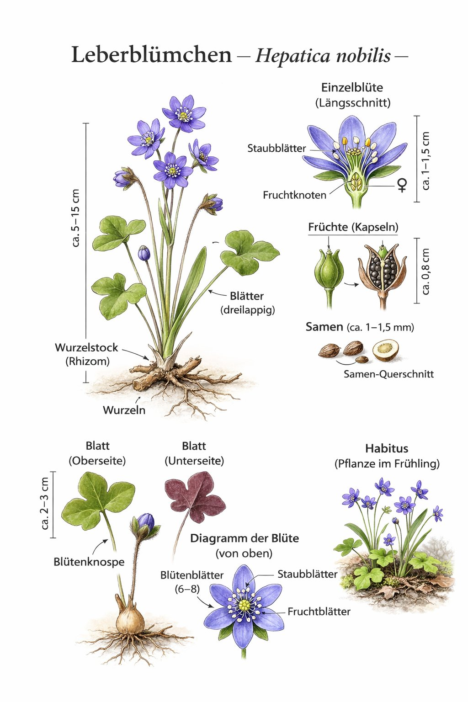

Nr. 11 · Frühblüher im Wald
Leberblümchen
Hepatica nobilis
Selten, blau und ein Überlebenskünstler in langsamer Zeitlupe.

Winzige Pflanze, grosses Alter
Eine blühende Leberblümchen-Pflanze ist mindestens 5 bis 10 Jahre alt. Ein Bestand von einem Quadratmeter hat möglicherweise 50 Jahre gebraucht. Was in Sekunden zerstört wird, brauchte Jahrzehnte. Das Leberblümchen ist eines der langsamsten und geduldigsten Wesen im Frühjahrswald.
Medizin nach Aussehen – die Signaturenlehre
Im Mittelalter glaubten Ärzte: Wenn eine Pflanze wie ein Organ aussieht, heilt sie es. Drei Lappen = Leber. Das reichte als Beweis für den Einsatz bei Gelbsucht. Die Patienten wurden selten gesünder. Heute ist das eine amüsante Fussnote – und ein wunderbares Gesprächsthema auf der Exkursion. "Hepatica" von "hepar" (Leber):Dreilappige Blätter = Leber – im Mittelalter ein ausreichendes Argument für Gelbsucht-Behandlung.
Wissenswertes & Merksätze
Schutzstatus
Nicht pflücken, nicht ausgraben. Wer einen Bestand findet, behält die Koordinaten besser für sich – Leberblümchen werden aus der Natur gestohlen.
Farbvariation
Typisch blau-violett – aber rosa und weisse Exemplare kommen vor, manchmal alle drei Farben an einem Standort.